简单CPU设计实践
文章目录
开始前的话
本文将从零开始介绍处理器的基本原理和架构，并且用简单的电路搭建方式实现一个非常简单的8 bit CPU。由于数字电路内容参考资料众多，并且大多数专业开设过数字电路，所以在此略过数电的知识，如果对数电有些不明白的，可以参考其他数电教程。
本教程开始之前要求至少要掌握：基本逻辑门、组合逻辑电路分析设计方法、译码器、编码器、数据选择器、比较器、加法器、三态门、基本触发器、锁存器、寄存器、移位寄存器、计数器。
在这里采用的工具是Logisim，这是一个较为简易的仿真工具，不会涉及具体的芯片，而是纯粹从原理的角度来分析仿真，对于简单的CPU仿真最合适不过了。
此外，本人水平有限，文中难免出现纰漏和错误，欢迎指出！
总体组成
CPU一般包括寄存器组、运算器和控制器。顾名思义，寄存器组负责存储，运算器负责进行运算，控制器则控制各个通路，使得处理流程得以进行。
对于现代的CPU，其复杂度远远不止如此，不过本文出于简单的目的，高级的内容将不做介绍，有兴趣可以参考一下计算机体系结构方面的内容。
首先，让我们来构造运算器。
运算器
一般简单CPU实现的运算操作有算术运算、逻辑运算和移位。算术运算主要包括加法（add）、减法（dec）、增1（inc）、减1（dec）等，逻辑运算主要包括与（and）、或（or）、非（not）、异或（xor），移位（shift）实现左移右移或者不变。
我们知道，数字电路里面的半加器（half adder）可以通过简单的逻辑表达式给出来，而加法器（adder）则可以通过多个半加器组合而成，算术运算器实际上就是一个加法器和其他几个运算的结合体，从而实现了上述的常用运算。但是如果我们需要做减法怎么办呢？
补码
众所周知， ，就这样，减法就转换成了加法，不过虽然去掉了减号，却带来了负数，那负数怎么表示？答案是用补码！
，就这样，减法就转换成了加法，不过虽然去掉了减号，却带来了负数，那负数怎么表示？答案是用补码！
实际上为了方便，我们把参与运算的数都用补码表示，定义正数和零的补码为本身，负数的补码为其反码加一（反码就是按位取反）。关于补码的详细介绍，可以参考《深入理解计算机系统》这本书。
当使用补码表示的时候，正数、零和负数可以很方便区分出来，最高位为0，则为正数或零，最高位为1，则为负数。
不过从理论上分析，我们还需要对运算结果按取模（n为位数）才是正确的，写成通式就是这样：
其实的意思就是舍弃最高位的进位。
举个例子，如果要计算八位二进制运算5-3，可以这样做：
，
然后做加法运算
00000101
+11111101
----------
100000010
↑
舍弃，得00000010，也即2
如果第一个是负数呢？情况也一样的，因为加法满足交换律，加法器的两个输入端也是对称的。
如果小数减大数呢？例如（八位字长）：
由此可以看出，当用补码表示整数的时候，加减法可以统一为加法运算。
算术单元
有了以上的理论就可以开始构造算术单元（AU - algorithm unit）了。
实际上，两数相减时，还需要对第二个数求补码，求补的话，至少需要求反，另外我们不仅仅需要加法、减法，还需要增1、减1。增1可以通过低位进位端实现，减1可以通过加负一的补码实现，也就是加全一，
所以综合以上，还需要在输入端加一个实现取反、全0、全1或保持原样的模块。
取反可以用非门实现，然后用数据选择器选择不同的通路，即可实现上述功能。
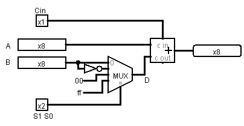
这样一个简单的4选一数据选择器和一个加法器就能构建出了一个简单的算术单元了！
其中的A和B是8路数据输入，S1、S0和Cin进行功能选择，右侧输出结果。
上述算数单元实现的功能表很容易写出来：
| S1 | S0 | Cin | D | 功能 |
|---|---|---|---|---|
| 0 | 0 | 0 | B | A+B |
| 0 | 0 | 1 | B | A+B+1 |
| 0 | 1 | 0 | ~B | A+~B |
| 0 | 1 | 1 | ~B | A-B |
| 1 | 0 | 0 | 全0 | A |
| 1 | 0 | 1 | 全0 | A+1 |
| 1 | 1 | 0 | 全1 | A-1 |
| 1 | 1 | 1 | 全1 | A |
逻辑单元
那么接下来就是逻辑单元（LU - logic unit）了
逻辑单元最简单了，一般来说，与或非和异或就够用了！
原理还是一样的，由两路信号输入，通过选择功能，输出结果！
原理图如下，和上面的算数单元类似，通过多选器选择不同的通路，从而实现不同的功能。
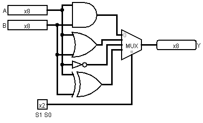
上述逻辑单元对应的功能表如下：
| S1 | S0 | 功能 |
|---|---|---|
| 0 | 0 | A and B |
| 0 | 1 | A or B |
| 1 | 0 | ~A |
| 1 | 1 | A xor B |
算术逻辑单元
接下来就是最重要的ALU即算术逻辑单元（algorithm logic unit）了
简单的来说就是把算术单元和逻辑单元组合起来。
分析：算术逻辑单元要实现的功能是对A和B进行特定操作，而进行哪种操作是需要选择的，所以输入端A、B和功能选择端是应该共用的，对于输出端，应该对算术和逻辑两者进行选择。
算数单元和逻辑单元，两者通过简单的组合，就能实现下面的ALU电路
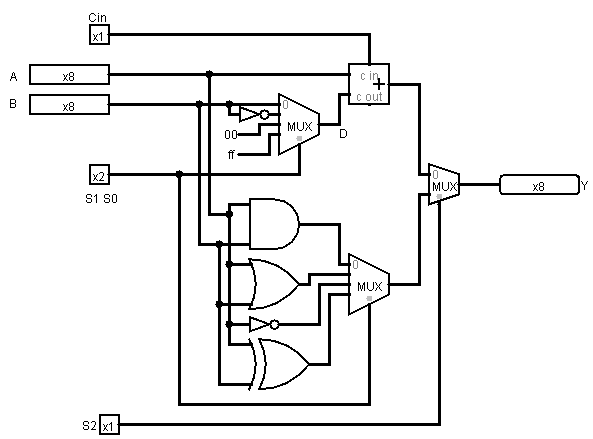
对应的功能表如下
| S2 | S1 | S0 | Cin | 功能 | 解释 |
|---|---|---|---|---|---|
| 0 | 0 | 0 | 0 | A+B | ADD |
| 0 | 0 | 0 | 1 | A+B+1 | 加并加1 |
| 0 | 0 | 1 | 0 | A+~B | 减并减1 |
| 0 | 0 | 1 | 1 | A-B | 减法 |
| 0 | 1 | 0 | 0 | A | MOV |
| 0 | 1 | 0 | 1 | A+1 | INC |
| 0 | 1 | 1 | 0 | A-1 | DEC |
| 0 | 1 | 1 | 1 | A | MOV |
| 1 | 0 | 0 | x | A and B | AND |
| 1 | 0 | 1 | x | A or B | OR |
| 1 | 1 | 0 | x | ~A | NOT |
| 1 | 1 | 1 | x | A xor B | XOR |
移位器
除了算术和逻辑运算，我们通常还需要一种移位运算，在这里，因为速度要求很高，不涉及到时序，也不需要暂存，所以不采用移位寄存器，而是用组合逻辑电路的移位器（shifter）。
移位的原理是使用不同的接线，错位N位就实现了移动N位，所以需要用到数据选择器。
对于一次一位的移位，只需要用二选一数据选择器。
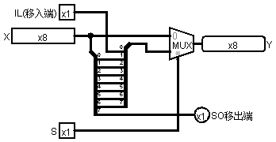
如果需要双向移动，则需要四选一。
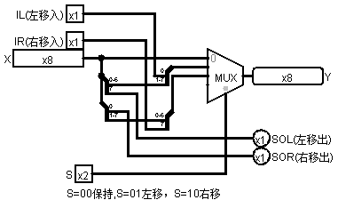
如果要一次移多位的话，需要用到桶形移位器，其复杂度会大大增加。
八位桶形向左移位器
可以一次移动0~7位
需要注意的是连线
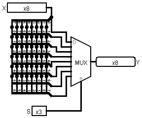
运算器综合
在以上各个部件的基础上，就能组成一个运算器了，当然这样的运算器还很简单，不过基本的运算能够满足了。
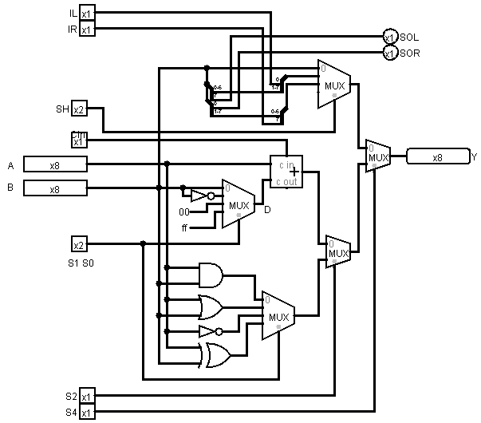
当然，单有数据输入/输出和功能选择还是不够的，很多时候我们都希望了解运算的状态，如溢出/进位/结果是否为零等，因此还需要添加一些标志的输出。
溢出判断
当运算的结果超过最大表示范围的时候，就会发生溢出。
分析可以得出：
对于加法，溢出只有在两数都为正，或者两数都为负的情况下才能发生；
对于减法，只有正数减负数或者负数减正数的情况下才可能溢出。
统一为加法之后，上述情况就是和，溢出时导致从低位进位到符号位，导致符号位变为0，因此可以得出结论：
当两数符号相同，运算结果与原数符号不同时，发生溢出。
状态标志这里设置了溢出OV、符号SI、进位CA、零ZO。
其中OV和SI只对算术运算有效，CA对算术和移位运算有效（移出位放入CA），ZO对算术和逻辑运算有效。
（无效并不意味着输出一定为0）
另外，将移位器的方向选择线IL，IR并入了S0，S1中，并且添加了一个算术左移（与逻辑左移实质是一样的）和算术右移（最高位不变）。
溢出OV检测：上面说过可以通过比较源操作数和结果的符号位判定，但是这样电路不容易实现，在这里，采用了对加法器的符号进位和最高进位进行异或运算以实现溢出判定，因此在布线时将加法器拆成了7bit+1bit。1表示溢出。
符号SI检测：通过检测加法器输出的符号位即可得出符号，为1时表示负数。
进位CA检测：移位操作移出的位或者是加法器最高位进位，因此需要在不同的操作时选用不同的线路，1表示进位。
零ZO检测：当输出为零时，所有位一定为零，因此逻辑就是全零得一，可用或非门实现。为1时，表示结果为0。
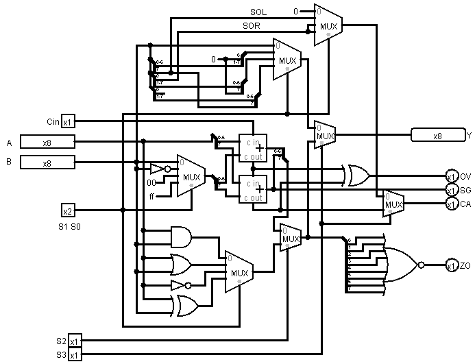
功能表：
| S3 | S2 | S1 | S0 | Cin | 功能 | 解释 | 有效标志 |
|---|---|---|---|---|---|---|---|
| 选择算术逻辑/~移位 | 选择逻辑/~算术 | 选择功能 | 进位输入 | ||||
| 0 | x | 0 | 0 | x | B | MOV B | CA |
| 0 | x | 0 | 1 | x | <-B | SHL/SAL（逻辑/算术左移） | CA |
| 0 | x | 1 | 0 | x | B-> | SHR（逻辑右移） | CA |
| 0 | x | 1 | 1 | x | #B-> | SAR（算术右移） | CA |
| 1 | 0 | 0 | 0 | 0 | A+B | ADD | OV、SG、CA、ZO |
| 1 | 0 | 0 | 0 | 1 | A+B+1 | 加并加1 | OV、SG、CA、ZO |
| 1 | 0 | 0 | 1 | 0 | A+~B | 减并减1 | OV、SG、CA、ZO |
| 1 | 0 | 0 | 1 | 1 | A-B | SUB | OV、SG、CA、ZO |
| 1 | 0 | 1 | 0 | 0 | A | MOV | OV、SG、CA、ZO |
| 1 | 0 | 1 | 0 | 1 | A+1 | INC | OV、SG、CA、ZO |
| 1 | 0 | 1 | 1 | 0 | A-1 | DEC | OV、SG、CA、ZO |
| 1 | 0 | 1 | 1 | 1 | A | MOV | OV、SG、CA、ZO |
| 1 | 1 | 0 | 0 | x | A and B | AND | ZO |
| 1 | 1 | 0 | 1 | x | A or B | OR | ZO |
| 1 | 1 | 1 | 0 | x | ~A | NOT | ZO |
| 1 | 1 | 1 | 1 | x | A xor B | XOR | ZO |
至此，一个完整的运算器已经完成好了！
运算器设计的总结和补充
运算器可以看做一个多功能的加工厂，输入两个数，输出一个结果。要采取哪种功能，必须要通过一些功能选择信号来进行选择。
所以设计时，首先要考虑需要进行哪些运算，然后将这些运算的输入端合并到一起，然后通过选择器选择哪个作为输出，当然也可以采用其他方法，比如用三态门代替数据选择器、通过选择输入从而实现功能选择等，总的原则就是输入-选择功能-输出。
这里没有加入乘法器和除法器，因为这些的体积很大，也会大大增加运算器的复杂性，在现实当中，早期微处理器由于集成度低，规模小，几乎都不设置乘法器。但如果要做乘法怎么办呢？有两种方法，一种是用CPU的微指令实现乘法（微指令以后会讲），一种是靠软件编程实现。例如8086的MUL、DIV实际是通过微指令实现的，CPU并没有专门的乘法器。随着集成度的提高，才有专门的乘法器，甚至有的处理器还配置了阵列乘法器。
寄存器组
注意事项
PS：各个组件名字叫法可能各种资料上不相同，但一般容易辨别的。
首先考虑通用寄存器
对于寄存器，需要实现的基本功能就是写数、储存、读数，一般至少要有输入端、时钟端（异步也有叫送数端）、输出端，另外根据具体情况，可能还需要使能端和清零端。
注意寄存器的时钟信号（送数信号）必须要是边沿触发的！
不能用锁存器代替触发器，因为锁存器会有空翻现象，控制时钟必须保持高度一致，对于毛刺（冒险竞争）现象很难处理。
这里需要区分寄存器和锁存器，最主要的区别就是寄存器是边沿触发，锁存器是根据电平来送数或保持（也即同步触发）。
另外还需要区分的是触发方式，可能是由于翻译的原因，国内很多资料对触发方式的叫法不一致，这里列出不同名称的对应关系：
Latch—-锁存器–同步触发器（电平信号激活）
Flip flop-触发器–边沿触发器（边沿信号激活）
另外RS触发器=基本RS锁存器
同步RS触发器=门控RS锁存器
另外Flip flop在台湾叫正反器。
使能端
对于寄存器组，由于寄存器共用输入线，需要对寄存器进行选择，选择的寄存器允许送数，其他寄存器不允许送数，所以这里的寄存器单元必须要带有使能端，使能端可以这样构造：
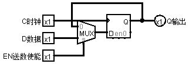
在EN=0时，总是保持不变，在EN=1时允许送数。
（Logisim的D触发器本身带有使能端，这里为了演示不使用EN端）。
留下个思考题：
使能端可以这样构造吗？为什么？
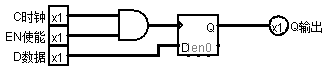
构建寄存器组
有了以上的基础就可以开始构建寄存器组（也叫寄存器文件 register file）了！
首先，我们考虑对寄存器的写入。
需要对寄存器写入，这就需要数据输入端，此外，还需要指定对哪个寄存器写，这可以把多个寄存器编址，用地址来表示一个具体的寄存器，比如四个寄存器可以用两位地址指定一个寄存器，八个需要三位。
但如果一个都不写怎么办呢？时钟是不会变的，一旦时钟来了就会写，这时候，使能端就发挥作用了，我们利用使能端结合地址实现指定一个寄存器，利用读写端和使能端结合实现要不要写入。
然后考虑对寄存器的读取
寄存器的输出端是一个持续不断的输出，而根据前面的运算器，我们需要从寄存器取两个操作数输入运算器，因此，寄存器组需要有两个输出，这两个输出要能够分别选择连接到两个寄存器，也就是要实现选择两个寄存器分别输出到A、B端，这个好解决，两个通道分别设置两个数据选择器，每个选择器能够选择任意的寄存器。
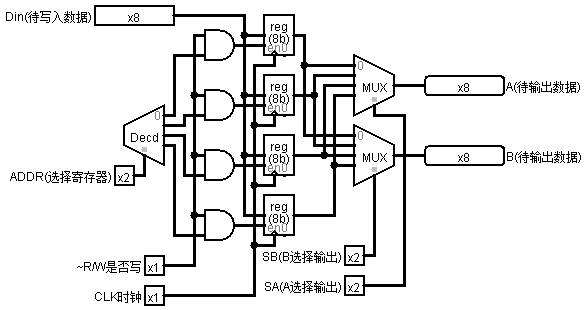
补充：寄存器的时钟端是只针对写操作而言的，一旦上升沿到来并且读写端为1且寄存器被选中，那么输入端的数就会送到寄存器中。对于输出端，不管时钟怎样，也不管读写端是0还是1，输出端时时刻刻都是寄存器的值。
实际上，这里构建的只是一个通用寄存器组，还有一些特殊功能的寄存器为了方便，我把它放到了后面的控制器中。
至此，通用寄存器组就构建完成啦。
控制器
控制器顾名思义，是整个CPU的控制中心，用来控制数据的流向，程序的转移。
一般来说，控制器包括程序计数器（PC），指令译码器（ID），有时也将指令寄存器（IR）放到控制器中。
总的控制功能是这样实现的：
程序计数器负责保存程序执行到的位置，指令寄存器保存当前指令，指令译码器把指令转化成控制字（控制字后面会将）。
程序计数器
首先需要知道指令在哪里：
一般来说，程序包括三种结构：顺序、分支和循环，其中分支和循环实际上可以由跳转实现，所以程序的执行方式可以归纳为顺序和跳转，对于顺序执行，只需要对程序计数器每次加一个固定的数即可实现，对于跳转，有两种方式实现，一种是绝对跳转，一种是相对跳转，绝对跳转直接给出下一条指令的地址，对程序计数器直接置数，对于相对跳转，则通过程序计数器加上或者减去某个值实现，一般来说大多数情况下用的是相对跳转。
程序计数器可以用寄存器、加法器和数据选择器实现
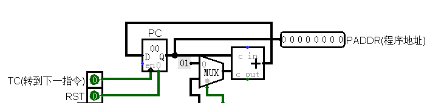
如果要顺序执行，则MUX选择常数01，指令所在地址每次加一
如果要跳转，则MUX选择下方的通路，下一条指令地址为当前地址加上偏移量。
指令寄存器
程序计数器给定了地址就可以把指令从存储器取过来了
指令从存储器取来放入指令寄存器中，指令寄存器与一般的寄存器完全一样。
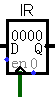
取得了指令还需要对指令进行译码，由于译码后的控制字与数据通路紧密相关，所以必须先确定好数据通路。
数据通路设计
数据通路是关于CPU内部多个组件直接数据的流向通道。
数据通路的类型多种多样，有的程序和数据分开，有的不分开，有的所有数据共用一条总线，也就是CPU的内部总线，也有的数据总线分多条。
在这里我们采用一种类似于MIPS的数据通路，其中程序、数据的数据线和地址线全都有专用的线，数据在寄存器与运算器、存储器都存在直接的通路，这样能够使得控制较为方便，效率比较高，但是连线比较多，寻址不够灵活。
一个大致的通路如下图所示（存储器就是RAM）：
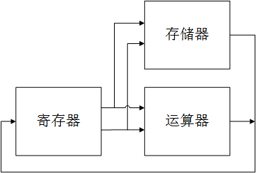
（上图的通路中，存储器接受的两路信号分别是数据线和地址线）
仔细观察上图不难发现，这种通路无法在一个周期里面实现寄存器简介寻址并参与运算，因为一个周期要么访问存储器，要么进行运算。
此外上图无法实现立即数寻址，这是无法忍受的，所以必须要在通路中加入立即数通路。
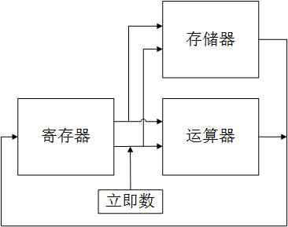
控制字
那么问题来了，两个或多个数据汇集到一起怎么办？就像上图红圈的地方。
办法是在每个交叉的地方设置“闸门”，也就是数据选择器，从而选择不同的通路。
对于存储器，只要提供“是否写入”的信号就能间接确定是否走存储器这条通路。
类似于这中闸门的还有许多，就像前面寄存器上面的A、B选择线、寄存器选择线、是否写入寄存器等。
把所有的这些控制通路的信号汇集到一起，组合成一个二进制数，就可以通过一个二进制数来控制通路了，这就是控制字！
通过控制字，可以决定在这个周期里面，用哪些寄存器做为待运算的数、是进行运算还是送入存储器、进行何种运算、是把运算结果还是存储器读出的值送入寄存器、送入哪个寄存器。
通过确定以上的信号，就能确定CPU要做的事情了！这就是控制字的作用，而指令可以看做是控制字的压缩码！
对于ADD R3，R2，R1，（即R3=R2+R1）这一条指令，实际CPU做的事情就是：
在A通道选择R2输出，在B通道选择R1输出
不选择立即数
存储器不写入
运算器选择加法运算
选择运算器输出的结果
选择R3作为待写入寄存器
寄存器组写入信号激活
时钟信号上升沿到来！
R3的值成功变为R2+R1！
这里是主要的控制字（其中标志位和跳转后面会讲）
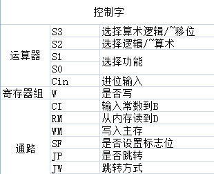
指令译码器
虽然控制字能够选择所有的通路，实现所有的功能，但是有些通路是无意义的，我们并不需要，此外，控制字通常比较长，需要多个字节才能存放，这样大大浪费了资源，所以就得想个办法！
办法就是采用指令译码器！
首先我们可以对控制字的根据通路分类，比如运算功能的通路基本一致，都是通过运算器运算，只是选择的运算功能不同，跳转通路一样，只是根据不同的标志位跳转，这里分析可以得到以下分类（当然不是最佳的，需要在压缩率和灵活性直接权衡）
| S3~Cin(5bit) | W | CI | RM | WM | SF | JP | JW(3bit) | IM | |
|---|---|---|---|---|---|---|---|---|---|
| 两个寄存器运算 | V | 1 | 0 | 0 | 0 | 1 | 0 | X | X |
| 寄存器+常量运算 | V | 1 | 1 | 0 | 0 | 1 | 0 | X | V |
| 写主存 | X | 0 | 0 | X | 1 | 0 | 0 | X | X |
| 读主存 | X | 1 | X | 1 | 0 | 0 | 0 | X | X |
| 跳转 | X | 0 | X | X | 0 | 0 | 1 | V | V |
其中V的意思是有效，X的意思是无效（无关），IM指的是立即数。
在上图中，可以对W/CI/RM/WM/SF/JP/JW进行编码，编码成000,001,010,011,100，这样只需要三个信号就能确定六个控制信号了，也就是这样：
| 两个寄存器运算 | 000 |
| 寄存器+常量运算 | 001 |
| 写主存 | 010 |
| 读主存 | 011 |
| 跳转 | 100 |
加上其他的信号，比如运算选择信号、寄存器选择信号、立即数，就是一个完整的指令格式了！
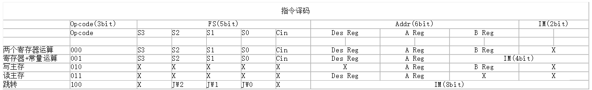
至于怎么编码，需要用到组合逻辑分析的知识，如果实在觉得麻烦，也可以借助Logisim等工具自动生成
这里是我设计的译码器：
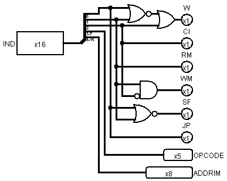
从上图可以看出，选择功能需要3bit，选择运算需要5bit，选择目标寄存器2bit，源寄存器A2bit，源寄存器B2bit，已经有14bit了，即使是16bit的指令，剩下的立即数和跳转方式几乎没有容身之地了，而加大指令长度又会造成浪费，这时可以采用复用技术，某些位在不同的情况下行使不同的功能。例如这里当寄存器与立即数运算时，B寄存器占用的资源复用作立即数，当跳转时，运算选择信号其中的S2、S1、S0复用作跳转方式，所有的寄存器选择信号复用为立即数。
状态寄存器
此外还有状态寄存器还没弄，状态寄存器本应放在寄存器里，这里为了方便，放入控制器。
由于状态寄存器只用来做跳转依据，所以只有在JP为1时才能查看状态位确定是否进行跳转，这里需要一个与门和数据选择器，与门用来实现JP的总控制功能，数据选择器用来选择跳转方式。
综合以上的程序计数器、状态寄存器、指令寄存器、指令译码器
控制器综合
一个完整的控制器就构建完成了！
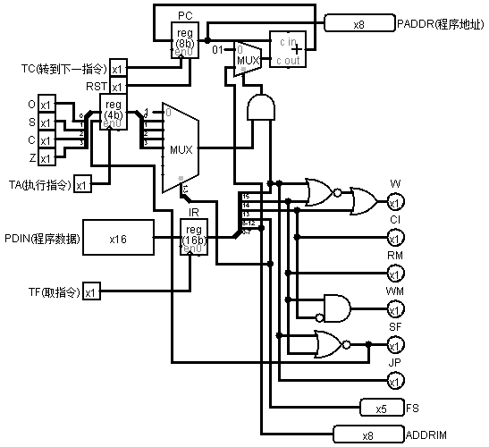
CPU综合
有了寄存器、运算器、控制器，设计好了数据通路和指令集，就可以构建CPU了！
封装
但是如果一大堆电路全部弄到一起的话，很容易弄乱的，所以需要把几个模块封装一下。
Logisim里封装还是很容易的。
运算器：
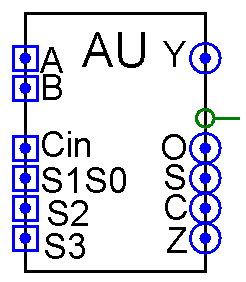
寄存器组：
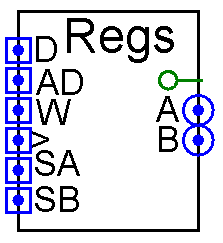
控制器：
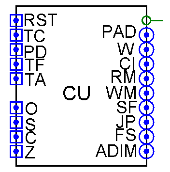
指令周期和机器周期
这里我们需要考虑一下指令周期。
首先需要从ROM中取指令，也就是用时钟上升沿把数送入指令寄存器。
然后指令经过译码，或者经过运算器，或者经过RAM，所以RAM需要第二个时钟上升沿。
然后需要把运算器的结果或者RAM读出的数送入寄存器组，所以寄存器组需要第三个时钟上升沿。
最后需要修改程序计数器，所以把第四个时钟上升沿给程序计数器。
综合以上，一个指令周期需要四个机器周期，可以使用时钟发生器、一个四进制计数器和一个译码器实现。
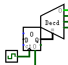
综合以上，就可以连接CPU的模块间线路了！
首先连接三个模块的通路（依照体系结构和数据通路）：
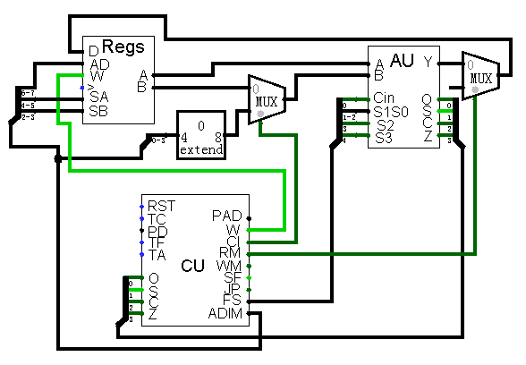
然后添加时钟信号（需要注意时钟的顺序）：
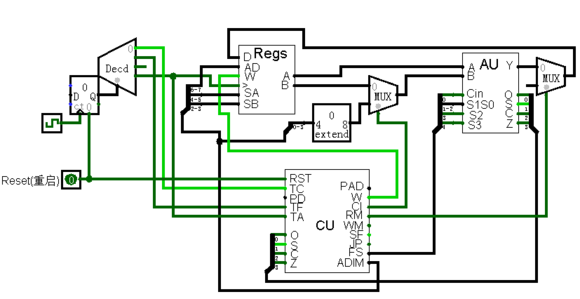
好啦，一个完整的CPU就构建完成了！
存储器
但是有了CPU还是不够的，还要有存储器才行，ROM和RAM的连接方式前面已经讲过，这里就不再赘述。
最终连出的就是这样子：
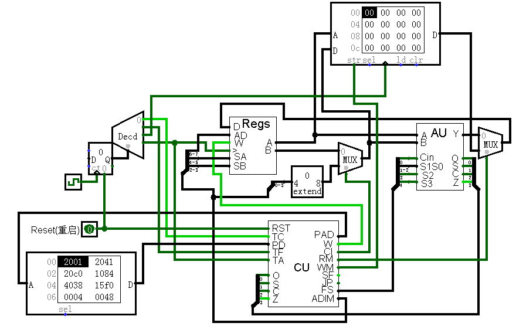
重启启动时钟，机器就能够根据ROM中的指令(初始地址为0)运行了！
编译器开发
虽然我们设计的CPU能够跑起来了，但是要让它运行指定的程序还是很困难的，因为程序都是二进制的机器码，这样编程效率太低了，也容易出错，所以我们需要一个能够直观、高效编程方法，那就是汇编。
编译器的开发需要有编译原理的知识，由于编译原理较为复杂，这里不再阐述。
这里我用Java写了个简单的汇编编译器，能够将汇编源代码转化成机器码（很简单的IF ELSE结构，编译原理没用上，详见附件）。
这是一个求斐波那契数列并存入RAM的程序：
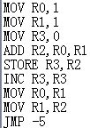
用编译器编译成的机器码（十六进制表示）：
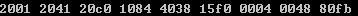
把编译出来的机器码导入ROM中，运行计算机，在RAM中成功得到了斐波那契数列！
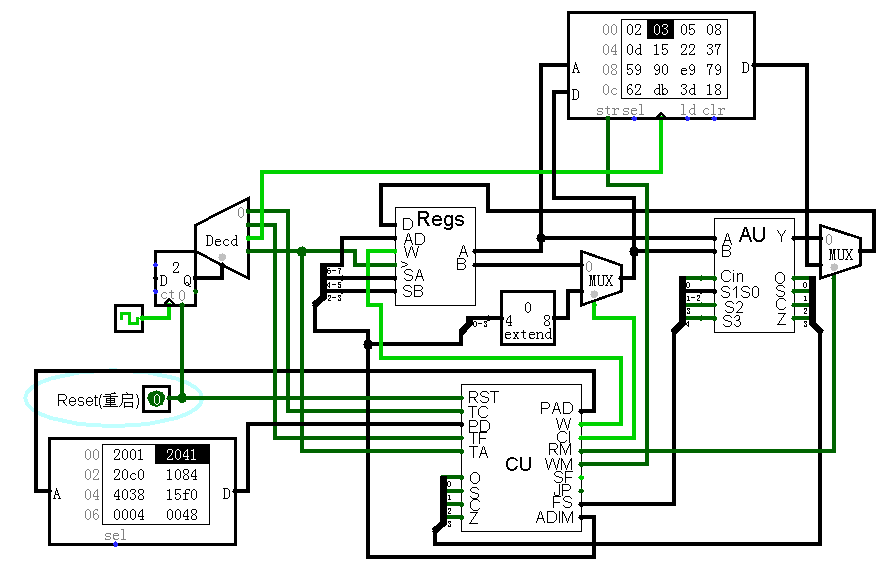
不足
上面介绍的处理器内容是最简单的模型，并且鲁棒性也不强，可能存在很多潜在的bug。首先是数据通路及其对应的指令集有很大的简化空间，其次是效率太低。对于在频率一定的情况下，要提高效率，总的思想是实现并行化，可以从这几个方面考虑：
- 增加位长，如采用16位
- 实现流水线，不过流水线会带来很多问题，如需要控制好流水段、设置流水寄存器、解决冒险问题等。
- 实现cache、指令缓存等，由此又会带来许多复杂性，比如如何解决cache一致性问题等，怎样提高命中率等。
- 流水线会出现停顿和清空等问题，解决这些问题可以采用乱序执行等方法，比如采用保留站实现寄存器重命名等。
- 实现编译器以及编译层面的优化等。
结束语
这只是一个极其简单的模型机，实际的现代计算机结构要复杂得多，但是总的说来思路和方法都是差不多的。
由于时间仓促，设计方面可能会许多BUG，欢迎及时提出来！
所有的设计、截图、工具我都会上传上来。
这篇文章陆陆续续写了一段时间了，所有的文字和图片都是本人本人手打和截图的，虽然耗费了不少时间，但是这个过程同时也是充满乐趣的。
另外本人水平有限，对于不准确的地方请还以其他参考资料为准！希望此贴能够给需要的人带来一些启发。
参考资料
《Logic and Computer Design Fundamentals》
——M. Morris Mano, Charles R. Kime
《Computer Organization and Design, Fourth Edition: The Hardware/Software Interface》
——Alfred V. Aho, Monica S. Lam, Ravi Sethi, Jeffrey D. Ullman
文章作者 Lianera
上次更新 2014年10月27日